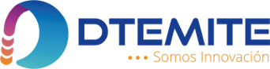

Desarrollo del POS móvil
El cobro con tarjeta dejó de depender solo del Kozen. Hoy la misma venta elige efectivo, TUU o Webpay según el aparato, y queda integrada a la plataforma de DTemite.
D-PAY 2.0 ya vendía en producción con tarjeta TUU, solo en terminal Kozen. Este semestre abre el mismo POS a un celular Android.
Crédito y débito por Intent. Sigue siendo el cobro con tarjeta del terminal. No se reescribió.
La pantalla de venta no conoce la pasarela. Un factory elige TUU, Webpay o Mock.
Sprints 1 y 2 cerrados. Webpay ya tiene evidencia del 4 de octubre. La boleta 39 con folio sigue abierta.
Crédito y débito por la app TUU. Webpay no reemplaza ese Intent.
QR al checkout de Transbank si el proxy responde. Sin red útil, solo efectivo.
Sigue disponible en ambos aparatos. Un Webpay aprobado no se graba como TUU ni como efectivo.
D-PAY no tiene base propia. PostgreSQL de DTemite resuelve la empresa y guarda la transacción donde el ERP de oficina ya mira.
| Pieza | Dónde vive | Qué guarda |
|---|---|---|
| admin_dtemite | Base global | Sistema, servidor y tenant del RUT |
| empresa_{rut}_cl | Base del cliente | Productos, clientes, documentos y tbl_dpay |
| tbl_dpay | Tenant | Monto, medio de pago, folio, estado |
| tbl_documento | Tenant | DTE asociado a la transacción |
| Proxy SQLite | webpay-proxy | Sesión de checkout. No es el libro de ventas |
Pendiente de este sprint: sincronizar el medio de pago Webpay en tbl_dpay. Hoy el resultado se marca aparte para no mezclarlo con TUU ni con efectivo.
| Sprint | Meta | Estado | Qué quedó demostrado |
|---|---|---|---|
| 1 | Entrar y armar la venta | Cerrado | Login, PIN, biometría, catálogo y carrito |
| 2 | Cobrar en efectivo | Cerrado | Venta en efectivo e historial local |
| Webpay | Tarjeta en celular | Evidenciado 4 oct | Aprobado, rechazado, cancelado y proxy caído |
| 3 · 6–17 oct | Regresión TUU y DTE | En curso | Débito Kozen OK. Boleta 39 con folio, abierta |
| Defensa | Mismo producto, sin alcance nuevo | 30 nov – 5 dic | Venta, efectivo, boleta, TUU y Webpay en su aparato |
Definition of Done v1.0: rama feature, pull request de un par, prueba en Android, demo al Product Owner y retrospectiva.
| Caso | Resultado | Evidencia |
|---|---|---|
| Clave incorrecta | OK | TC-02 · celular · 4 oct |
| Webpay débito $2.000 aprobado | OK | Comprobante Transbank · 4 oct |
| Webpay rechazado y cancelado | OK | Checkout y diálogo en la app · 4 oct |
| Proxy sin configurar | OK | Webpay no se ofrece; el efectivo sigue |
| TUU débito $2.000 en Kozen | OK | Pago exitoso · 13 oct |
| TUU crédito cancelado por el cajero | OK | No es rechazo del emisor · 13 oct |
| TUU crédito aprobado y rechazo de emisor | Sin evidencia | TC-RG-01 queda parcial |
| Boleta 39 con folio en servidor | Abierta | TC-03, historial y nota de crédito |
| Requisito | Umbral | Medición | Lectura |
|---|---|---|---|
| RNF-01.1 Login | < 3 s | Peor caso 2,5 s en 4G | Cumple |
| RNF-01.3 Catálogo | < 5 s | 1,0 s en WiFi y 4G | Cumple en el catálogo QA actual |
| RNF-01.5 Webpay | < 10 s | ~10 s · dos muestras · 4 oct | En el borde del umbral |
| RNF-01.4 Emisión DTE | < 15 s | Sin medir | Espera la boleta 39 con folio |
En laboratorio el proxy arma el checkout en menos de 0,2 s y el login de la API responde en ~0,17 s. Esas cifras no reemplazan el cronómetro en el celular. El timeout oficial del checkout Webpay es 300 s. Falta repetir el catálogo con 500 productos.
La entrega de Fase 2 separa el producto, el trabajo del equipo y el de cada integrante.
Esta presentación. Documentación (visión, backlog, sprints, diseño, RNF, retrospectivas, pruebas y manual). Aplicación en Evidencias de Sistema. El modelo de datos describe tbl_dpay sobre el PostgreSQL de DTemite.
Informe de avance 2.3 y la guía del informe final 2.6. Cuentan el mismo avance: sprints 1 y 2 cerrados, Sprint 3 en curso, Webpay evidenciado.
Diario de reflexión y autoevaluación de Diego Madrid, Pablo Gutiérrez y Reinhartd Munzenmayer.
Pablo: sprint backlog y Definition of Done. Diego: diseño y manual de despliegue. Reinhartd: retrospectivas y plan de pruebas.
Acepta la demo. Efectivo y TUU, ya aceptados, tienen que seguir cobrando en cada review.
Ceremonias, tablero y flujo Git. El merge a la rama principal pasa por pull request.
Diego construye la app y el proxy. Reinhartd ejecuta el plan de pruebas y clasifica las capturas.
Gracias. Preguntas - Diego Madrid, Pablo Gutiérrez y Reinhartd Munzenmayer.
Fase 2 · desarrollo del POS. Timer del tiempo total y avance automático por diapositiva.